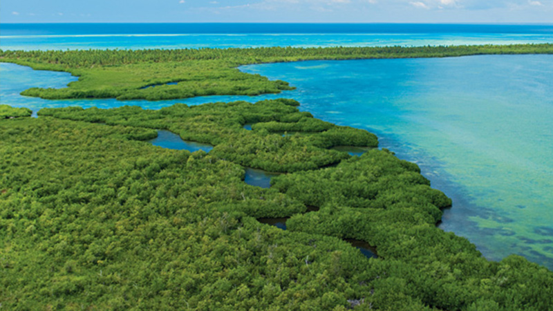

El Parque Ncional del Este,tambien conocido como Parque Nacional Cotubanama, es una de las reservas naturales mas importantes de la Republica Dominicana.
Este parque ofrece una rica biodiversidad y paisajes impresionantes.
A continuacion, se muestra una imagen del Parque Nacional del Este:
En el parque, puedes realizar diversas actividades como:
Para mas informacion, puedes visitar los siguientes enlaces:
Este es un video sobre el Parque Nacional del Este: